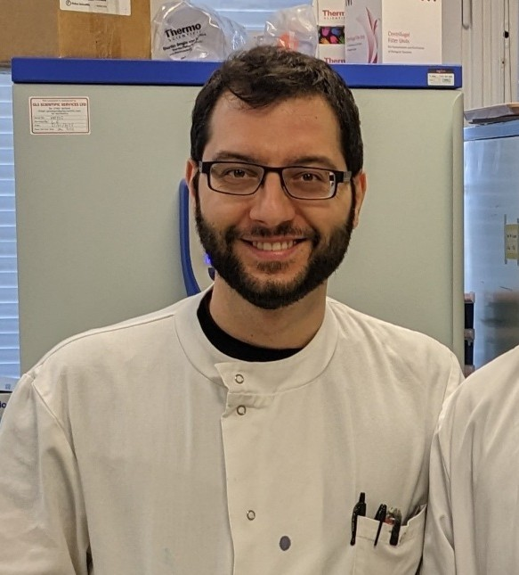

Advancing label-free cancer spheroid analysis with XAI-validated deep learning architectures.
CNN optimized for phase-contrast imagery. Identifies necrotic cores and calculates viability scores.
Vision Transformer (ViT) architecture that predicts drug resistance by correlating morphological changes.
Non-invasive prediction of cellular states without destructive chemical assays, allowing for longitudinal monitoring.
Utilizing Grad-CAM and TCAV to verify that neural attention aligns with biological markers like necrotic cores.
Ensuring model robustness across diverse imaging platforms and varying laboratory conditions.
Accuracy Increase vs. Baseline
Non-Destructive Analysis
XAI Verified Predictions
comprehensive classification of the intrinsic physicochemical differences found in pathological areas and their applications in drug delivery, prodrug activation, imaging, and theranostics for future personalised medicines.
Nature Communications ChemistryMultispecifc polybodys achieve solid tumor inhibition and immune cell infiltration in mice solid tumor models.
Chemical Engineering JournalThis review provides a comprehensive analysis of the current state and the future strategies to optimize collagen.
npj Regenerative MedicineIntegrating insights from advanced in vitro modelling and cutting-edge detection strategies, this review highlights the current landscape and future directions for optimising the study of gold nanoparticle delivery across barriers in cancer nanomedicine.
Royal Society of ChemistryClick to select Spheroid Image
We believe that the future of oncology lies in the synergy between biological complexity and computational clarity.
Traditional drug discovery is often slowed by the "observation gap"—the delay between treatment and measurable outcome. Our lab is dedicated to closing that gap. By leveraging 3D spheroid models and XAI-validated neural networks, we provide researchers with real-time, non-invasive insights that were previously invisible.
Our goal is to transform every microscopy image into a rich data stream, accelerating the journey from the laboratory bench to the patient’s bedside.
Principal Investigator
Advanced Therapeutics in Oncology
Lead AI
AI & Computer Vision

Biological Lead
Oncology & 3D Cell Models
Research technician
Optical Imaging
Our study demonstrates that machine learning does not have to be a "black box." By proving that our models focus on actual necrotic fragmentation, we provide researchers with a tool that is as interpretable as it is powerful.